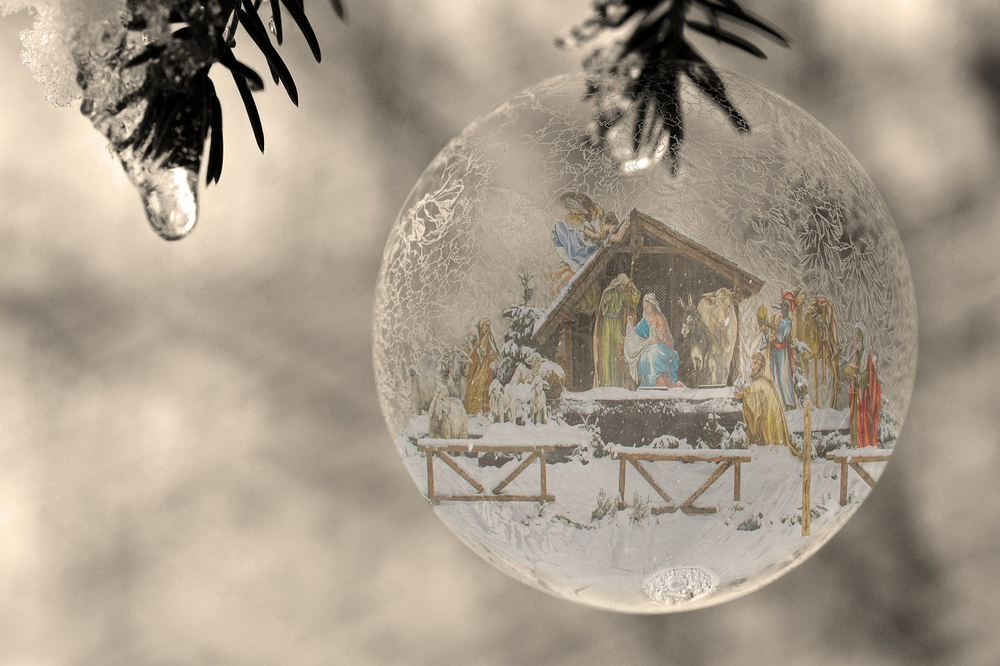

Frohe Weihnachten und ein gutes Neues Jahr für Euch und Eure Familien!
Mache dich auf und werde Licht.
Mache dich auf und werde Licht.
Mache dich auf und werde Licht.
Denn dein Licht kommt.
(Kanon!)
Noten siehe Gotteslob Nr. 219 (TonArt Stukenbrock, 17.12.2023)
Meine Hoffnung und meine Freude, meine Stärke, mein Licht.
Christus meine Zuversicht, auf dich vertrau ich und fürcht mich nicht, auf dich vertrau ich und fürcht mich nicht.
Meine Hoffnung und meine Freude, meine Stärke, mein Licht.
Christus meine Zuversicht, auf dich vertrau ich und fürcht mich nicht, auf dich vertrau ich und fürcht mich nicht.
Noten siehe musescore (04.01.24)
Jubelt und freut euch, jubelt und singt, Gott hat Großes an uns getan. Jubelt und freut euch, fürchtet euch nicht. Halleluja, halleluja!
Jubelt und freut euch, jubelt und singt, Gott hat Großes an uns getan. Jubelt und freut euch, fürchtet euch nicht. Halleluja, halleluja!
Noten siehe Ateliers et Presses de Taizé, 0401.2024
Über die App „wePix arena“ könnt ihr euer Handy zum Lichtermeer machen! Siehe Anleitung
Oder per Web Seite in allen Farben als Lichtermeer oder per Hintergrundfarbe Rot, Grün, bzw. Gold
Oder mithilfe der Taschenlampenfunktion
Den Verweis (Link) auf diese Web Seite kannst Du einfach weitergeben per QR-Code:
